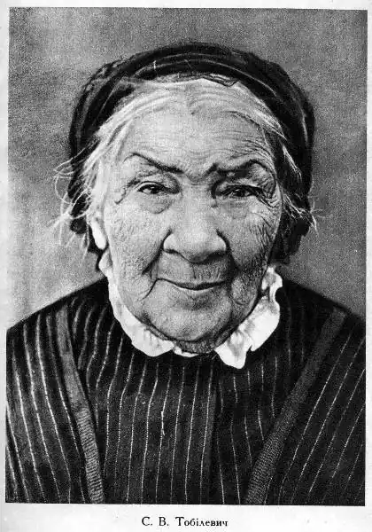
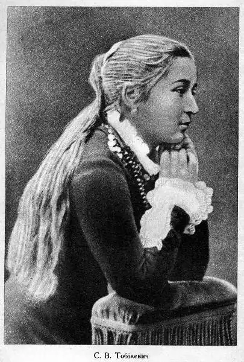

Софія Віталіївна Тобілевич народилася 12-го жовтня 1860-го року на Вінниччині у збіднілій шляхетській родині, її дядьком по матері був Зиґмунт Сераковський – один із лідерів польського повстання 1863 року, знайомий Тараса Шевченка. Із 1883 року Софія Віталіївна розпочала свою сценічну діяльність, у цьому ж році вони із Іваном Тобілевичем одружилися. У різні роки жила у Новочеркаську, на хуторі Надія, виступала у складі труп Садовського, Саксаганського, у Театрі ім. Т. Шевченка в Києві, у Новому драматичному театрі ім. І. Франка Гната Юри (Черкаси). Закінчила сценічну діяльність у 1935 році. Померла Софія Тобілевич у віці 92-ох років.
Софія Віталіївна – видатна акторка, фольклористка (усе життя збирала народні пісні; у 1982 році з’явилася збірка "Українські народні пісні в записах Софії Тобілевич"), перекладач (переклала драму польського письменника Горчинського "В липневу ніч"; драму Я. Галасевича "Чортівська лава" ("Чортова скала"), "Зачароване коло" Л. Риделя та багато інших). Але найбільший її внесок в українську культуру – популяризація творчості її чоловіка Івана Карпенка-Карого та інших корифеїв українського театру. Її статті та праці "Корифеї українського театру. Портрети. Спогади" (1947) та "Мої стежки і зустрічі" (1957) є зразками української мемуаристики.
Книга "Мої стежки і зустрічі" є вельми цінним джерелом для дослідників творчості Івана Карпенка-Карого. Софія Тобілевич малює образ живого драматурга з його сумнівами і переживаннями, розкриває деякі секрети творчої лабораторії, історії та джерела написання драм, проходження їх через цензуру та вкорінення у репертуар українських труп. Стиль мемуаристики Софії Тобілевич ясний і поетичний, що яскраво демонструє творче начало та письменницький хист авторки. Це робить її не просто дружиною видатного драматурга Карпенка-Карого, а самобутньою письменницею, актрисою, фольклористикою, яка подарувала українській культурі гроно майстерно зіграних ролей, і не менш майстерно написаних творів.